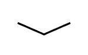
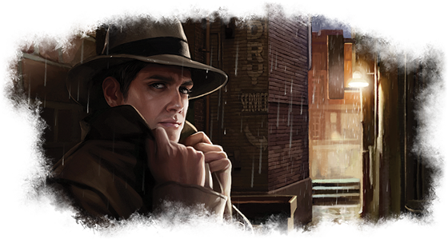
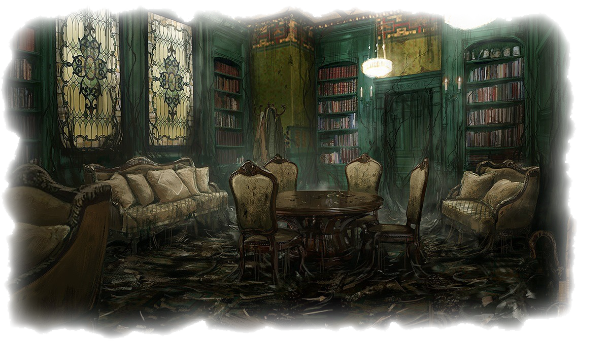
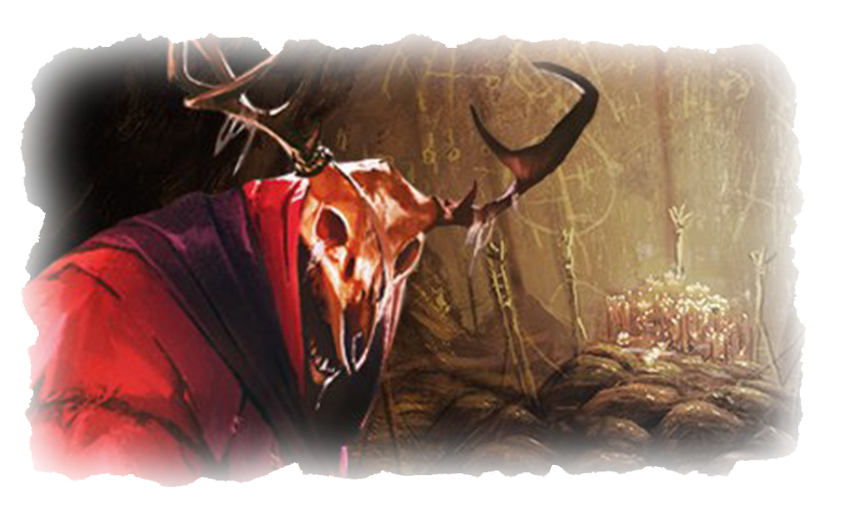
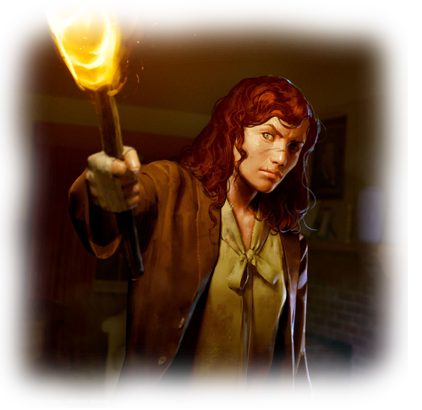

몰입감 있는 플레이를 위해
소리를 켜는 것을 추천합니다.
스토리 진행을 위해
아래 버튼을 눌러 주세요.

이 게임은 소설가 H.P러브크래프트의 소설을 원작으로 하고 있습니다.
선택지에 따라 달라지는 다양한 엔딩을 경험해보세요.
금요일, 1913년 9월 18일 아컴, 매사추세츠.
길고 비정상적으로 더운 여름의 끝자락이다.
가을이 다가오고 있음에도, 무더위는 끊임없이 계속되고 있다.
고요하고 형언할 수 없는 분노가 마을을 지배하고 있다.
사람들은 걸핏하면 화를 내는 일이 잦아졌고 과격한 폭행이 늘어갔다.
이뿐만 아니라 불가사의한 실종사건이 점차 증가했고
평소에는 얌전했던 동물이 사람을 습격하는 사건도 발생했다.
이런 사건들을 단순히 더운 날씨의 탓으로 하기엔 의문이 남는다.
"당신"은 연방의 요원으로서 이 사건에 가득찬 의문을 해결하기위해 아캄시로 발걸음을 옮겼다.


늦은 밤. 숙소로 사용하고 있는 저택의 서재에서 사건의 자료를 정리하던 "당신".
정리를 끝내고 방을 나가려는 찰나 서재로 나가는 문이 눈앞에서 사라졌습니다.
분명 눈앞에 있던 벽은 사라지고 당신의 앞에는 단단한 벽만 남아있습니다.
당신의 행동을 선택하세요.
1. 서재를 나가는 단서를 찾기 위해 방을 조사한다.
2. 지금 일어난 일이 악몽이라고 생각하며 쇼파에서 잠을 청한다.
서재를 살펴보니 분명 깔끔했던 바닥의 러그 귀퉁이가
너덜너덜하고 진흙이 묻은 것을 알아챘습니다.
잠깜이나마 달콤한 잠에 취했지만, 금세 뜨거운 열기에 잠에서 깨어났다.
일어나 주변을 둘러보니 상황은 조금 더 보다 더욱 끔찍했다.
방안은 연기로 가득 찼고 주변 벽과 가구들은 불타고 있었다.
뒤늦게 탈출구를 찾아보지만 여전히 문은 사라지고 벽은 막혀있다.
당신은 서재안에서 불길에 휩싸여 비참한 최후를 맞이합니다.
이로서 아캄시가 어떤 운명을 맞이할지는 아무도 알 수 없습니다.
[엔딩1 : 현실이된 악몽]
러그를 들어올리니 놀랍게도, 방 바닥에서 서재 밖으로 나가는 문이 보입니다.
천천히 문을 돌리자 문이 벌컥 열렀고, 아래층 복도가 내려다 보입니다.
당신은 문안쪽으로 뛰어 내렸고, 부드러운 흙 위에 착지했습니다.
집의 복도는 진흙으로 뒤덮혀 있고,
나무바닥은 온데간데없이 사라진 채 흙으로 가득합니다.
복도는 다락방, 지하실, 거실과 이어집니다.
당신의 행동을 선택하세요.
1. 썩은 고기냄새가 나는 다락방을 조사한다.
2. 냉기가 뿜어져나오는 지하실을 조사한다.
3. 뜨거운 장벽으로 막힌 거실을 조사한다.
다락방에 들어가자 고기 썩은 냄세가 진동한다.
천장에 매달린 갈고리에는 이상한 괴물의 사체가 걸려있고
시체에서서 나온 피가 술통에 떨어진다.
당신의 행동을 선택하세요.
1. 다락방을 더 자세히 조사한다.
2. 복도로 돌아간다.
다락방에서 "빈 술통"을 발견했다.
"술통"이 어딘가 쓰일데가 있지 않을까 싶어 챙겨 복도로 돌아온다.
저택의 지하실은 지하 얼음 동굴과 터널들이 복잡하게 얽힌 미로로 변했다.
동굴 안쪽에서는 지독한 한기가 흘러나오고 있다.
당신의 행동을 선택하세요.
1. 지하실 동굴 안쪽을 조사한다.
2. 복도로 돌아간다.
거실의 열기를 낮출만한 "얼음 조각"을 발견했다
"얼음 조각"을 챙겨 복도로 돌아왔다.
다락방에서 발견한 "빈 술통"에 지하실에서 발견한 "얼음 조각"을 담아
장막에 뿌리자 장막히 서서히 녹아서 사라진다.
장막이 사라진 거실을 향해 이동한다.
거실로 가는 길은 뜨거운 장막으로 가로 막혀있다.
장막은 뚫고 가기엔 너무나 뜨거워 온 몸을 태울 것만 같았다.
다른 힌트를 찾아 복도로 돌아간다.
밖에서 미칠듯한 울음소리가 들려온다.
잠깐의 정적후 괴성과 함께 진흙으로 뒤덮힌 바닥에서 괴물들이 뛰쳐나온다.
저택에서 너무 오랜 시간을 사용한것 같다.
당신은 괴물들에게 둘러쌓여 죽음을 맞이합니다.
이로서 아캄시가 어떤 운명을 맞이할지는 아무도 알 수 없습니다.
[엔딩2 : 너무 늦었나?]
복도에서 미칠듯한 울음소리가 들려온다.
엎핏 인간의 형태를 띄고 있지만, 머리와 네발은 사나운 개의 모습을 한
끔찍한 짐승이 짐승이 나타났다.
괴물의 공포스러운 두 눈동자는 당신을 향하는 것만 같다.


"대체 무슨 짓이야?"
괴물의 비명과 함께 들린 것은 여성의 힘찬 고함소리였다.
"대체 내 장벽에 무슨 짓을 한거야?!"
그녀가 당신에게 고함을 지르고 분노합니다.
그리고 그와 동시 끔찍한 괴물은 당신을 향해 다가오고 있습니다.
당신의 행동을 선택하세요.
1. 구울사제를 혼자 공격한다.
2. 여성을 설득해 구울사제를 함께 공격한다.
3. 괴물과 맞설 용기가 나지 않는다. 문밖으로 뛰쳐나간다.
거실 바닥에 떨어져 있는 한손 도끼를 잽싸게 들어
구울사제의 머리를 향해 힘껏 휘둘렀지만,
구울사제는 잠깐 휘청일뿐 다시 자세를 바로잡고
크고 날카로운 손톱으로 내 심장을 순식간에 가로질렀다.
>
구울의 손톱은 한순간에 심장을 꿰뚫었고 말로 표현할수 없는 고통이 느껴졌다.
어디선가 들리는 누군가의 소리치는 목소리가 점점 멀어지며, 서서히 눈이 감긴다.
[엔딩3 : 무모한 용기]
당신은 목숨만 유지한 채 간신히 저택을 빠져나왔습니다.
"멍청아! 네가 무슨 짓을 했는지 알아?"
"거실에서 봤던 그녀가 서둘러 당신을 뒤쫓아오며 소리칩니다."
>
"우선은 시간이 없으니 여길 빠져나가야해."
"그리고 모든걸 설명해줄게 이 도시에서 생긴 일들을..."
당신은 아무 말 없이 그저 고개를 끄덕였고,
빗속을 뛰어가는 그녀를 따라 아컴 강변으로 향했습니다.
[엔딩4 : 생존자]
당신을 향해 소리치던 여자는 끔찍한 괴물의 모습을 보더니 당신을 향해 다급히 소리칩니다.
"저 괴물을 절대 저택에서 살려 내보내면 안 돼!"
"그리고 알수없는 붉은색의 신비로운 가루를 괴물을 향해 뿌립니다."
>
괴물이 가루에 닿자 괴로운듯이 비명을 지릅니다.
그틈을 놓치지 않고 당신은 바닥에 떨어져 있는 손도끼를 잽싸게 들어
괴물의 머리를 향해 있는 힘껏 휘두르자 괴물이 쓰러집니다.
>
"구울을 잡으려고 준비했던 봉인을 네가 박살냈어!"
그녀가 횃불을 들어 올립니다.
이제 남은 방법은 이 지옥 구덩이를 태워버리는 것 밖에 없어.
>
당신의 행동을 선택하세요.
1. 그녀의 제안의 동의하며 저택을 불태웁니다.
2. "그 지옥 구덩이가 누구집인데!" 저택을 불태우지 않습니다.
이로서 많은 괴물들은 저택과 함께 불타 사라질 것입니다.
하지만 아직 모든 사건이 끝난 것은 아닙니다.
이 사건의 배후를 찾기위해 당신은 여성과 함께 아컴 강변으로 이동합니다.
[엔딩5 : 대의를 위한 희생]
당신은 무사히 생존했고 집도 지킬 수 있었습니다.
하지만 아직 모든 사건이 끝난 것은 아닙니다.
이 사건의 배후를 찾기위해 당신은 여성과 함께 아컴 강변으로 이동합니다.
강변으로 발걸음을 옮기면서 당신은 자신의 선택이 올바른 선택이었는지 고민에 빠집니다.
[엔딩6 : 소중한 나의 집]